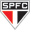

Jogadores Alexandre Pato Nascimento: 1960 Nasceu em: Araraquara, São Paulo Times: Guarani, de Campinas (1978), São Paulo, Nápoli (Itália), Seleção Brasileira (1986 e 1990) e São José-POA Títulos: Deu o título de campeão do Guarani (1978). Foi campeão Paulista em 1985 e 1987 e Campeão Brasileiro em 1986 pelo São Paulo. Conquistou o Campeonato Italiano de 1990 jogando pelo Nápoli. Títulos: Campeonato Paulista (2004, 2006) Campeonato Brasileiro (2003), Copa do Brasil (2006). D' Alessandro Nascimento: 1960 Nasceu em: Araraquara, São Paulo Times: Guarani, de Campinas (1978), São Paulo, Nápoli (Itália), Seleção Brasileira (1986 e 1990) e São José-POA Títulos: Deu o título de campeão do Guarani (1978). Foi campeão Paulista em 1985 e 1987 e Campeão Brasileiro em 1986 pelo São Paulo. Conquistou o Campeonato Italiano de 1990 jogando pelo Nápoli. Títulos: Campeonato Paulista (2004, 2006) Campeonato Brasileiro (2003), Copa do Brasil (2006). Fred Nascimento: 1960 Nasceu em: Araraquara, São Paulo Times: Guarani, de Campinas (1978), São Paulo, Nápoli (Itália), Seleção Brasileira (1986 e 1990) e São José-POA Títulos: Deu o título de campeão do Guarani (1978). Foi campeão Paulista em 1985 e 1987 e Campeão Brasileiro em 1986 pelo São Paulo. Conquistou o Campeonato Italiano de 1990 jogando pelo Nápoli. Títulos: Campeonato Paulista (2004, 2006) Campeonato Brasileiro (2003), Copa do Brasil (2006). Barcos Nascimento: 1960 Nasceu em: Araraquara, São Paulo Times: Guarani, de Campinas (1978), São Paulo, Nápoli (Itália), Seleção Brasileira (1986 e 1990) e São José-POA Títulos: Deu o título de campeão do Guarani (1978). Foi campeão Paulista em 1985 e 1987 e Campeão Brasileiro em 1986 pelo São Paulo. Conquistou o Campeonato Italiano de 1990 jogando pelo Nápoli. Títulos: Campeonato Paulista (2004, 2006) Campeonato Brasileiro (2003), Copa do Brasil (2006). Ronaldinho Gaúcho Nascimento: 1960 Nasceu em: Araraquara, São Paulo Times: Guarani, de Campinas (1978), São Paulo, Nápoli (Itália), Seleção Brasileira (1986 e 1990) e São José-POA Títulos: Deu o título de campeão do Guarani (1978). Foi campeão Paulista em 1985 e 1987 e Campeão Brasileiro em 1986 pelo São Paulo. Conquistou o Campeonato Italiano de 1990 jogando pelo Nápoli. Títulos: Campeonato Paulista (2004, 2006) Campeonato Brasileiro (2003), Copa do Brasil (2006). Dedé Nascimento: 1960 Nasceu em: Araraquara, São Paulo Times: Guarani, de Campinas (1978), São Paulo, Nápoli (Itália), Seleção Brasileira (1986 e 1990) e São José-POA Títulos: Deu o título de campeão do Guarani (1978). Foi campeão Paulista em 1985 e 1987 e Campeão Brasileiro em 1986 pelo São Paulo. Conquistou o Campeonato Italiano de 1990 jogando pelo Nápoli. Títulos: Campeonato Paulista (2004, 2006) Campeonato Brasileiro (2003), Copa do Brasil (2006). Hernane Nascimento: 1960 Nasceu em: Araraquara, São Paulo Times: Guarani, de Campinas (1978), São Paulo, Nápoli (Itália), Seleção Brasileira (1986 e 1990) e São José-POA Títulos: Deu o título de campeão do Guarani (1978). Foi campeão Paulista em 1985 e 1987 e Campeão Brasileiro em 1986 pelo São Paulo. Conquistou o Campeonato Italiano de 1990 jogando pelo Nápoli. Títulos: Campeonato Paulista (2004, 2006) Campeonato Brasileiro (2003), Copa do Brasil (2006). Jadson Nascimento: 1960 Nasceu em: Araraquara, São Paulo Times: Guarani, de Campinas (1978), São Paulo, Nápoli (Itália), Seleção Brasileira (1986 e 1990) e São José-POA Títulos: Deu o título de campeão do Guarani (1978). Foi campeão Paulista em 1985 e 1987 e Campeão Brasileiro em 1986 pelo São Paulo. Conquistou o Campeonato Italiano de 1990 jogando pelo Nápoli. Títulos: Campeonato Paulista (2004, 2006) Campeonato Brasileiro (2003), Copa do Brasil (2006). Jeferson Nascimento: 1960 Nasceu em: Araraquara, São Paulo Times: Guarani, de Campinas (1978), São Paulo, Nápoli (Itália), Seleção Brasileira (1986 e 1990) e São José-POA Títulos: Deu o título de campeão do Guarani (1978). Foi campeão Paulista em 1985 e 1987 e Campeão Brasileiro em 1986 pelo São Paulo. Conquistou o Campeonato Italiano de 1990 jogando pelo Nápoli. Títulos: Campeonato Paulista (2004, 2006) Campeonato Brasileiro (2003), Copa do Brasil (2006). Rogério Ceni  Nascimento: 1960 Nasceu em: Araraquara, São Paulo Times: Guarani, de Campinas (1978), São Paulo, Nápoli (Itália), Seleção Brasileira (1986 e 1990) e São José-POA Títulos: Deu o título de campeão do Guarani (1978). Foi campeão Paulista em 1985 e 1987 e Campeão Brasileiro em 1986 pelo São Paulo. Conquistou o Campeonato Italiano de 1990 jogando pelo Nápoli. Títulos: Campeonato Paulista (2004, 2006) Campeonato Brasileiro (2003), Copa do Brasil (2006). Paulo Bayer Nascimento: 1960 Nasceu em: Araraquara, São Paulo Times: Guarani, de Campinas (1978), São Paulo, Nápoli (Itália), Seleção Brasileira (1986 e 1990) e São José-POA Títulos: Deu o título de campeão do Guarani (1978). Foi campeão Paulista em 1985 e 1987 e Campeão Brasileiro em 1986 pelo São Paulo. Conquistou o Campeonato Italiano de 1990 jogando pelo Nápoli. Títulos: Campeonato Paulista (2004, 2006) Campeonato Brasileiro (2003), Copa do Brasil (2006).